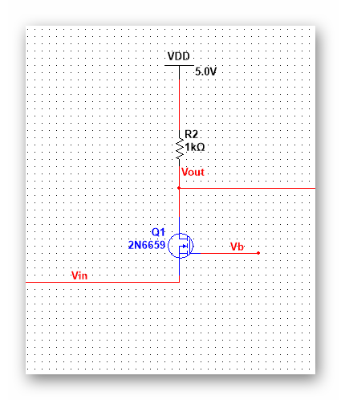

| 模拟集成电路 | |
目录： 一之MOS器件 二之单级放大器 三之差动放大器 四之电流镜偏置 五之实际电路1 六之实际电路2 七之实际电路3 八之实际电路4 九之实际电路5 十之实际电路6 十一之实际电路7 十二之实际电路8 十三之实际电路9 十四之实际电路10 十五之实际电路11 十六之实际电路12 十七之实际电路13 十八之实际电路14 返回页： 类似页：
|
八、共栅极 可以看到，共栅极的输入放在S，输出在D，G端提供基准电压。 可以看到，输入电压通过作用于栅压来调节电流来达到控制输出电压的目的。 使用广大信号分析可以得到的增益 Av=gm*（1+η）*Rd，这里的η指的是阈值电压随Vin的变化，η=gmb1/gm1 可以看到这里的增益为为正。 这里解释一下三极管区：个人感觉三极管区就是线性区。 接下来看一下这个结构的输入输出阻抗： 输入阻抗等于1/(gm+gmb)，这说明体效应减小了输入阻抗，在一定程度上提高应用范围。 源端输入阻抗等于Rd/(gm+gmb)ro+1/(gm+gmb),这个输入阻抗说明漏端阻抗要除以（gm+gmb）*ro，这对于短沟道器件来说特别重要。 当Rd换成理想电流源时，输入阻抗无穷大。
|
|---|---|